Как создать карту в MapInfo
Оригинал опубликован на сайте Лаборатории АгроГИС-технологий ФГУ «Калугаагрохимрадиология» 14 апреля 2011 года. В статье дается детальное описание технологического процесса создания макета карты в ГИС MapInfo с большим количеством пошаговых иллюстраций, а также приведены ссылки на исходные материалы и сопутствующие методики.
Автор: Симашков Юрий Васильевич © 2011
Иногда начинающим дизайнерам карт не хватает на первых порах самых простых технологических знаний и навыков для составления макетов карт и картограмм в ГИС MapInfo. К сожалению, в документации и различных руководствах по ГИС MapInfo рассматриваются, как правило, лишь отдельные технические моменты, взятые вне контекста конечной цели – подготовки макета карты к изданию (публикации). А ведь только представление о том, как и в какой последовательности использовать эти отдельные фрагменты знаний, позволяет создавать выходной продукт – макет вашей карты. Собственно говоря, это и есть основная цель работы в ГИС. Поэтому, сейчас попробуем пройти весь технологический путь по составлению макета картограммы на примере, ну скажем, оформления результатов агрохимического обследования. (Данный пример является показательным в том плане, что в нём присутствуют основные технологические моменты и решения, которые встречаются при оформлении многих карт. В каком-то смысле этот случай является «типовым» для решения многих задач).
Небольшая ремарка. Вообще, строго говоря, по дизайну и оформлению карт существуют целые курсы. Если попытаться скомпилировать смысл этих инструкций, то их можно свести (в общих чертах) к следующим пунктам:
- Целевая аудитория – вы должны хотя бы приблизительно представлять, для кого предназначена карта. Одно дело создать карту-схему для глянцевого журнала, другое – подготовить карту для солидного научного атласа;
- Исчерпывающая информативность карты – должны быть нанесены: название карты (титул), масштаб, автор (организация), проекция карты, легенда, направление север-юг;
- Эстетика (дизайн) карт – качество оформления, наличие координатной сетки, сочетание (подбор) тонов на тематических картограммах, подбор шрифтов и т.д.
Итак, предположим, что у нас уже имеются следующие заготовки – слои:
- rastr – растровая картинка плана внутрихозяйственного устройства («внутрихоз»);
- parcels – векторный слой обследуемых участков с атрибутивной информацией;
- setka_2500 – координатная сетка с шагом 2500 метров.
Итак, предположим, что у нас уже имеются следующие заготовки – слои:
(Материалы этого учебного примера можно скачать по следующей ссылке: http://narod.ru/disk/11545157001/MapExample.rar.html)
Небольшая ремарка. В приведённом учебном примере векторный слой parсels уже «готовый». Готовый – это в том смысле, что уже отвекторизован (оцифрован). При написании этой статейки я сначала хотел посвятить несколько строк технике векторизации. Но потом, немного поразмыслив, передумал. И вот почему. Во-первых, чтобы не уходить от основной канвы статьи – оформления карт и не отвлекаться на детали. А во-вторых, поверьте опыту, любой мало-мальски грамотный пользователь компьютера на уровне владения MS Office освоит операторские премудрости оцифровки в ГИС MapInfo, ну максимум, дня за два (правда, при условии, что рядом есть грамотный, набивший руку на оцифровке специалист). Редактор MapInfo в этом смысле, по моему мнению, является непревзойдённым в плане простоты освоения и удобства в работе. Пару слов об оцифровке в MapInfo можно посмотреть здесь.
Все заготовки есть, можно начинать. Помещаем на карту геопривязанный растровый слой (как зарегистрировать растр можно посмотреть здесь):
Небольшая ремарка. Использование растровой картинки в качестве контекста при создании карт является хорошим правилом. Это верно в том смысле, что позволяет существенно экономить силы – не надо оцифровывать те слои карты, которые представляют лишь второстепенный интерес. Есть ситуация в контексте карты на растровом слое – во многих случаях этого бывает вполне достаточно! Необходимость тотальной оцифровки всех и вся возникает крайне редко, и делать это нужно лишь в исключительных случаях. Поэтому совет – всё, что нужно для контекста карты – оставляйте по максимуму в растровом слое. Оцифровывайте лишь то, что нужно для последующего пространственного анализа и обработки.
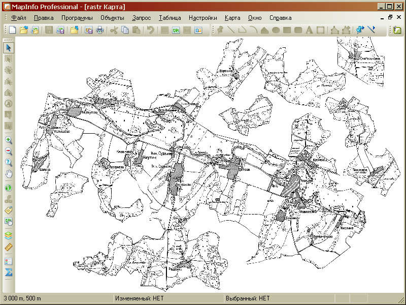Загружаем слой участков (Parcels):
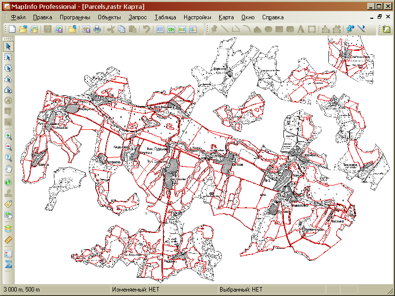Добавляем сетку (как её создать – можно посмотреть здесь):
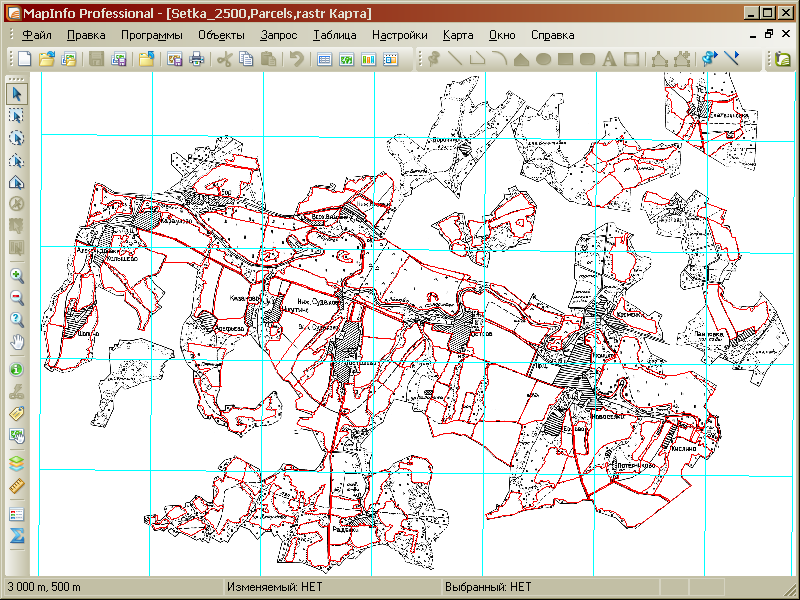Теперь, если открыть Менеджер слоёв (Ctrl+L), то можно увидеть сл. картинку:
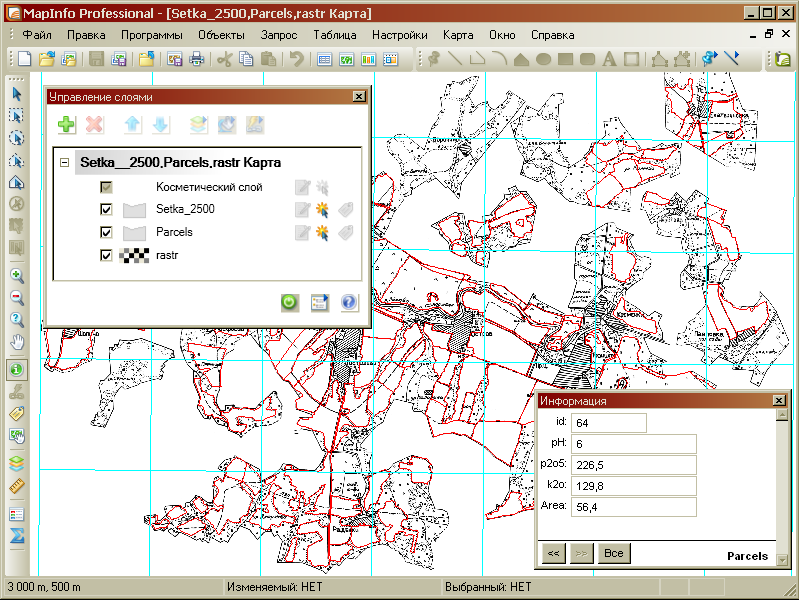Так, необходимый минимальный набор слоёв (растр, вектор, коорд. сетка) для построения различных вариантов карты у нас готов. Теперь немного о том, какие варианты оформления карт разной направленности можно создать.
При желании (как вариант) можно попробовать «насадить» внутрихоз на космоснимок (как это сделать – смотрите здесь). Но это, как говорится, дело вкуса. В этом случае у вас может получиться что-то вроде этого (информацию о том, где можно взять и как качнуть космоснимки можно посмотреть на нашем сайте здесь):
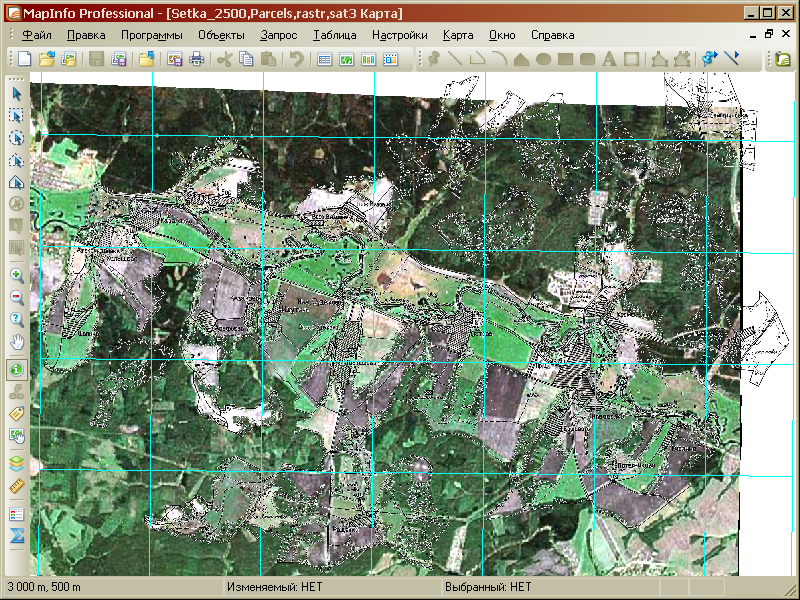Теперь попробуем построить тематическую карту по значению кислотности почв (pH) на каждом контуре.(Эта информация есть в атрибутивных данных в поле pH слоя Parcels). И тут возможно несколько вариантов визуализации ваших данных. Во-первых, можно попробовать создать тематическую поверхность. Для выполнения этой задачи идём Карта → Создать тематическую карту → Тематическая поверхность. В этом случае наша картограмма может выглядеть приблизительно так (более подробную информацию о построении тематических картограмм можно посмотреть по этой ссылке):
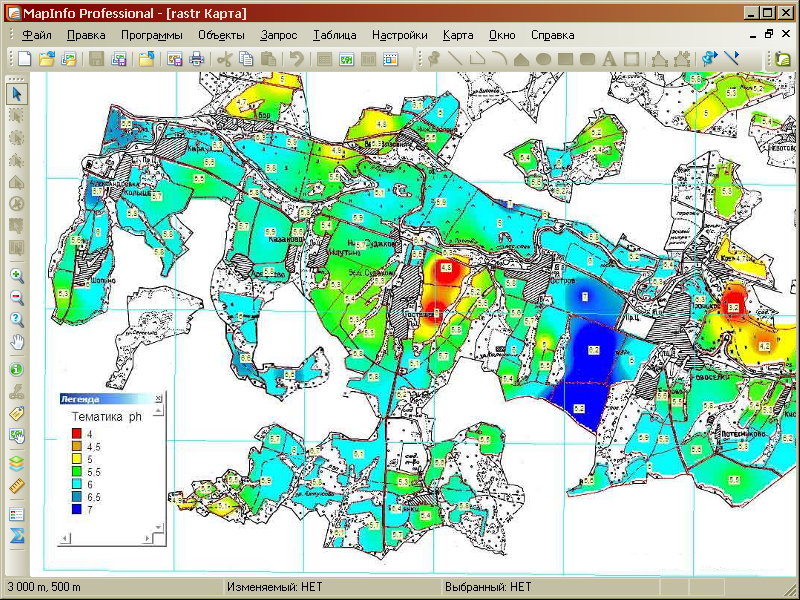В более крупном масштабе с нанесёнными изолиниями (как нанести изолинии можно посмотреть здесь) – Sborka2.wor учебного набора:
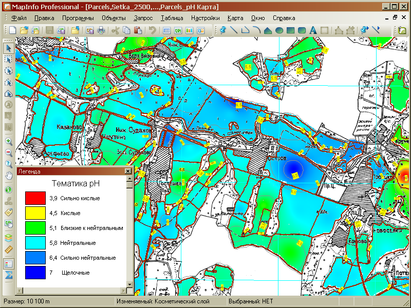Вот так может выглядеть тематическая карта, положенная на космоснимок c инвертированной шкалой по показателю pH (кислотность почв, Sborka3.wor из учебного набора):
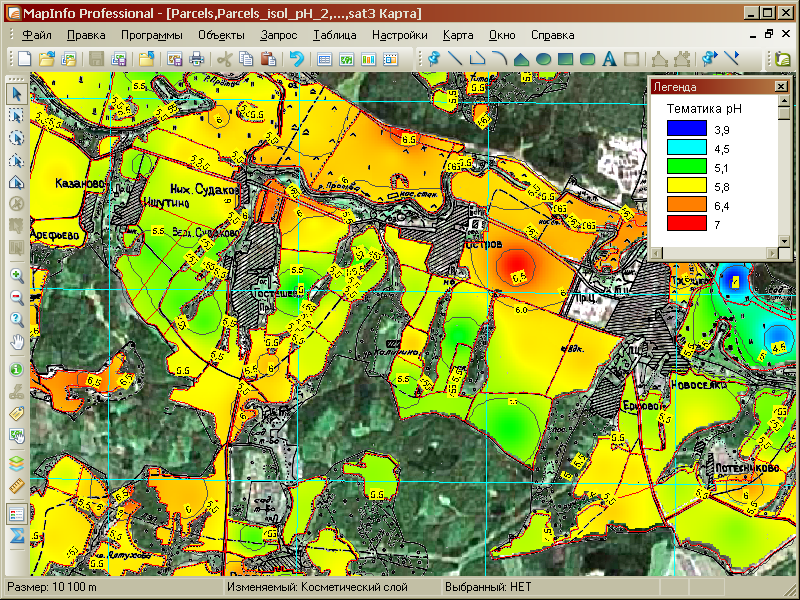Поскольку создание модели рельефа является, строго говоря, одним из частных случаев построения тематических картограмм (причём, весьма распространённым), здесь я хотел бы немного отступить от логики статьи, и привести пример использования модуля-расширения к ГИС MapInf0 Vertical Mapper для решения этой задачи на несколько иных данных (TIN-интерполяция):
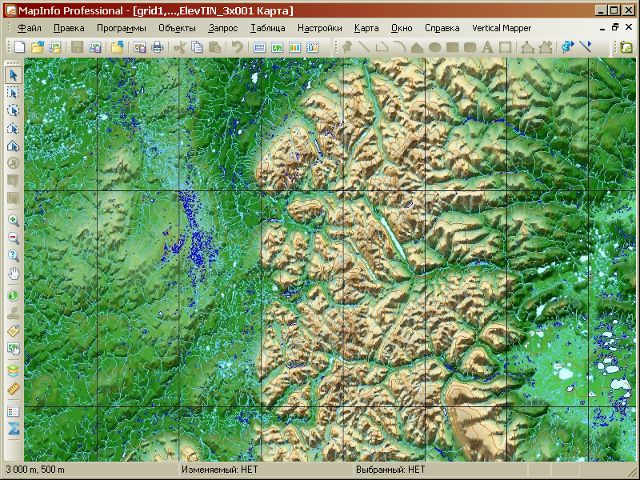Как видите, средствами Vertical Mapper удалось создать весьма реалистичную модель рельефа местности.
Однако вернёмся к нашему основному примеру. Есть ещё один вариант построения тематической поверхности с использование Vertical Mapper. Эту информацию можно посмотреть на нашем сайте по этой ссылке:
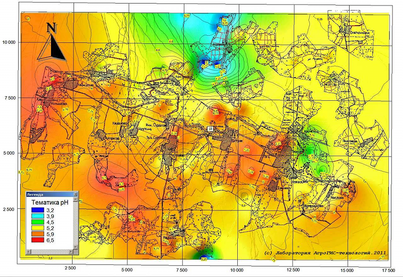А можно построить тематику по дискретным диапазонам. (В общем, тут есть над чем поработать в плане подбора наиболее выразительных и наглядных инструментов визуализации пространственных данных). Для выполнения этой задачи также идём меню Карта → Создать тематическую карту:
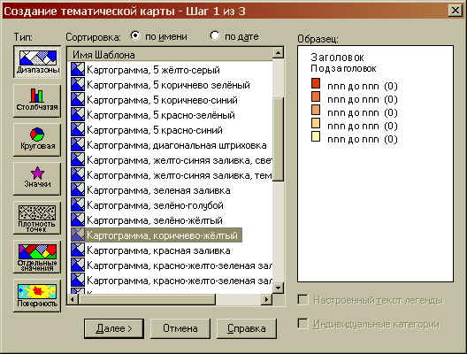Здесь выбираем, ну, скажем, жёлто-коричневую гамму.
Жмём кнопку Далее и выбираем параметр для тематической раскраски:
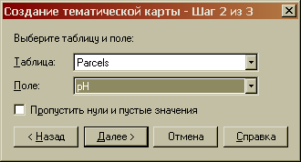Опять Далее:
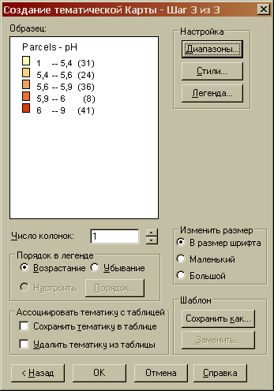Жмём кнопку OK и получаем такую картинку:
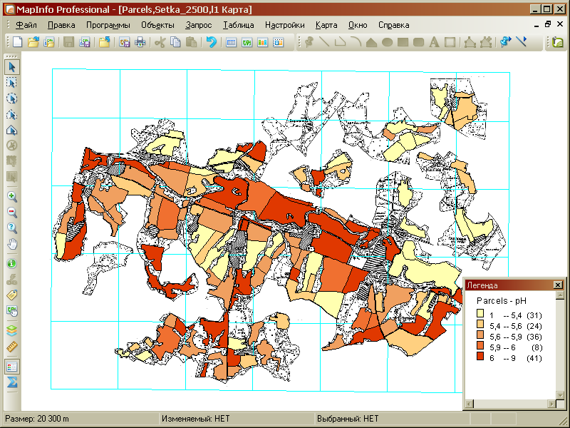Всё хорошо, но раскраска контуров получилась немного плотновата – при печати на плоттере это будет смотреться не очень изящно. Нужно немного подправить гамму. Для этого опять идём в Менеджер слоёв, выбираем появившийся слой тематики (Диапазоны -pH):
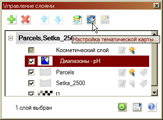Жмём кнопку Тематика > кнопка Стили:
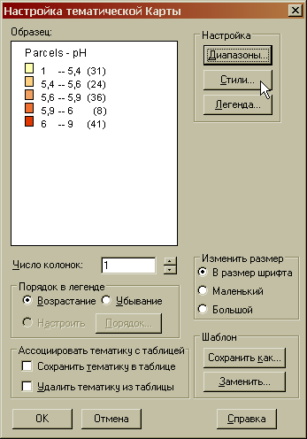Здесь жмём на стиль закраски полигонов максимального диапазона (интервала)
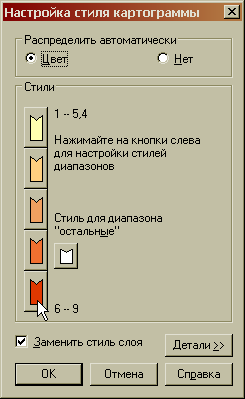… и выбираем менее плотный оттенок коричневого:
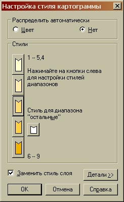Теперь наша карта выглядит так:
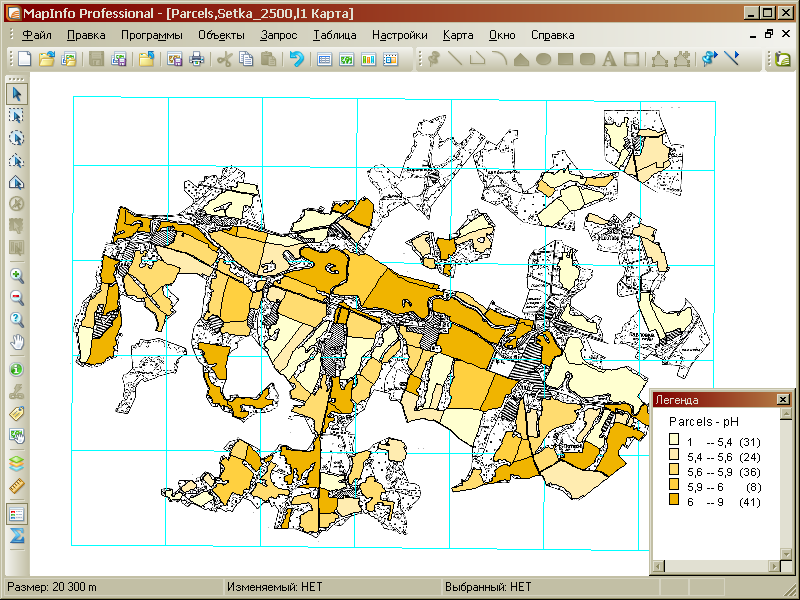Заготовки шаблонов тематической раскраски картограмм для изготовления агрохимпаспортов можно взять здесь.
Так… Уже лучше. Но есть на нашей карте в таком виде один недостаток – тематика закрывает растровую картинку и, поэтому, контекст карты в этих местах не виден. Для исправления этого недостатка опять идём в Менеджер слоёв и поднимаем слой растра выше тематики:
Менеджер слоёв теперь выглядит так:
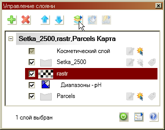Здесь жмём на кнопку Оформление для придания прозрачности растровому слою.
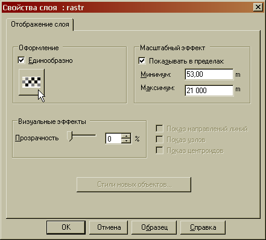Жмём на кнопку под флажком Единообразно.
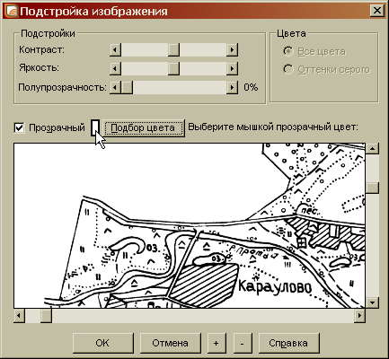На форме Подстройка изображения делаем белый цвет картинки прозрачным.
Теперь наша карта выглядит сл. образом:
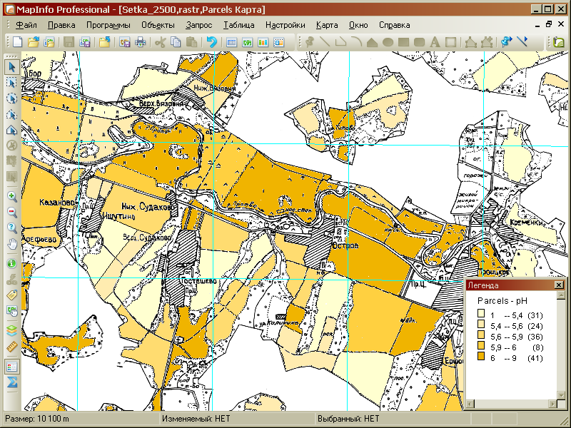Ну вот, добились прозрачности растрового слоя. Стали видны подписи на растровой картинке и другой контекст.
Теперь неплохо бы выделить границы контуров. Для этого добавляем в Менеджере слоёв ещё один слой Parcels и устанавливаем его границы так, как показано ниже:
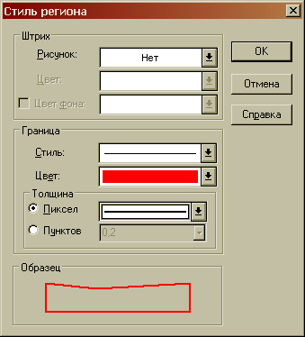Видим следующий результат:
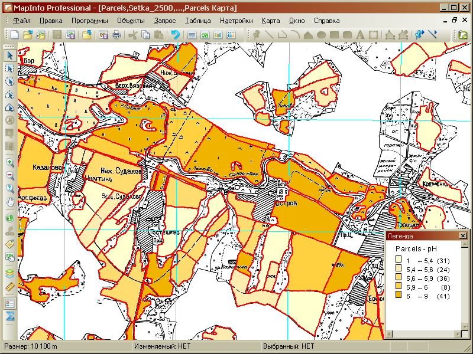Следующим шагом будет нанесение подписей на нашу карту. Опять идём в Менеджер слоёв и выставляем флажок Подписи в слое Parcels:
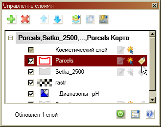Жмём на кнопку Подписи и заполняем необходимые реквизиты – Стиль подписи … :
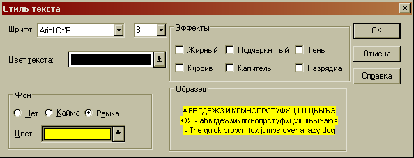… и выражение для текста подписей будет следующим:
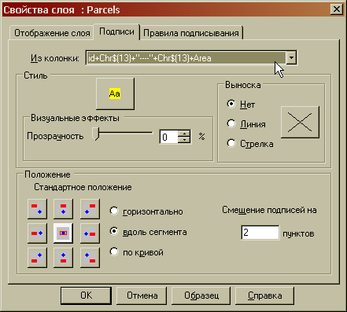Теперь наша карта с оформленными таким образом подписями будет выглядеть так:
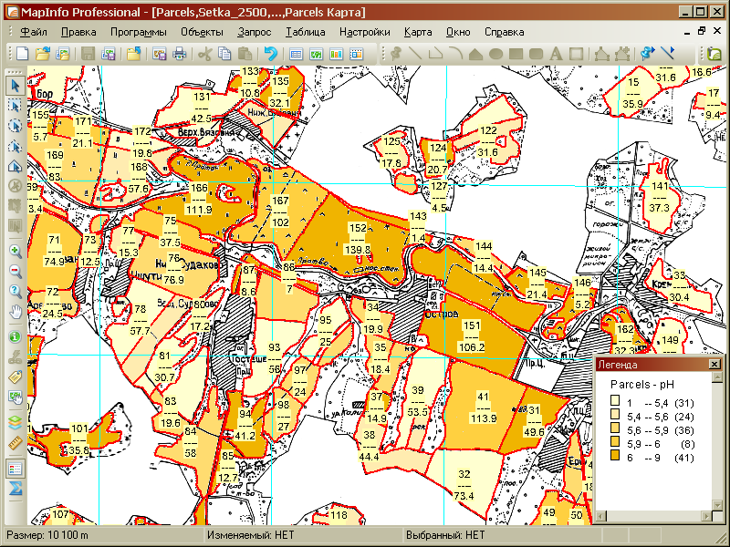На всякой солидной карте должно быть указано направление Север-Юг. Для этого необходимо нанести, ну скажем, на косметический слой специальный значок. Делается это так. Выбираем в Панели инструментов стиль точек:
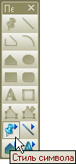И устанавливаем набор символов MapInfo Arrows:
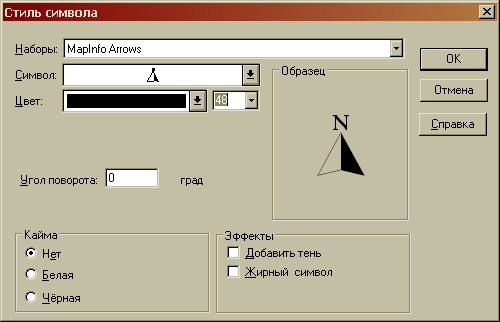Теперь инструментом Точки наносим точку в виде указанного символа:
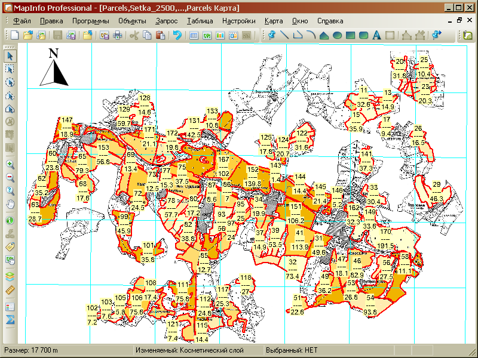Можно считать, что в первом приближении карту мы оформили. Следующий этап – это подготовка макета (Layout). Для этого идём в меню Окно > Новый отчёт. Здесь для экономии места предположим, что макет Отчёта у нас имеется. (Информацию о том, как правильно отпозиционировать карту в Отчёте можно посмотреть по этой ссылке). Осталось только инструментом Рамка(Frame) на панели Инструментов нанести на макет нашу карту (для справки – в фрейм на макете можно вставить следующие объекты ГИС MapInfo- Карту, Список, Легенду, График):
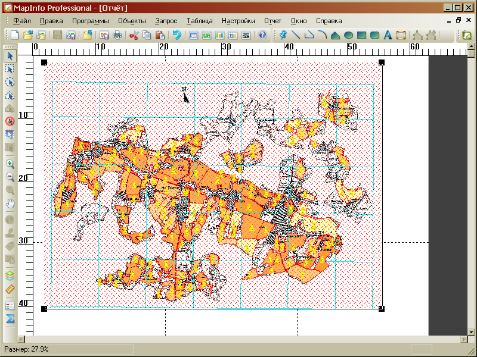М-даа… Наша карта лежит как-бы сверху и закрывает другие реквизиты Отчёта. Но ничего, сейчас всё поправим. Выбираем наш фрейм с картой и щёлкаем в инструмент Стиль полигонов и задаём реквизиты рамки как показано ниже:
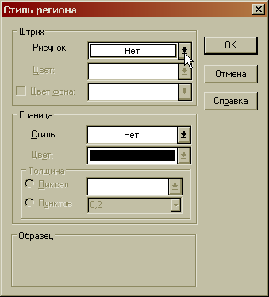Установим масштаб карты на макете. Для этого дважды щёлкаем по фрейму и устанавливаем нужный масштаб:
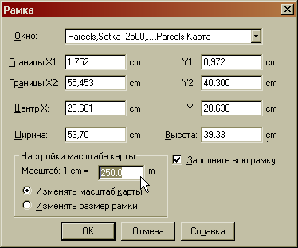Осталось только переместить нашу карту на задний план (контекстное меню Подложить вниз, чтобы легенда карты и титульная надпись были сверху):
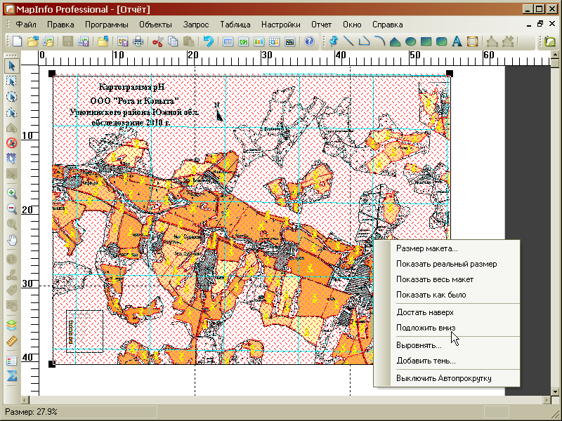Не забываем нанести на макет карты титульную надпись, легенду и угловой штамп. Теперь результат всей нашей работы может в окончательном виде может выглядеть так:
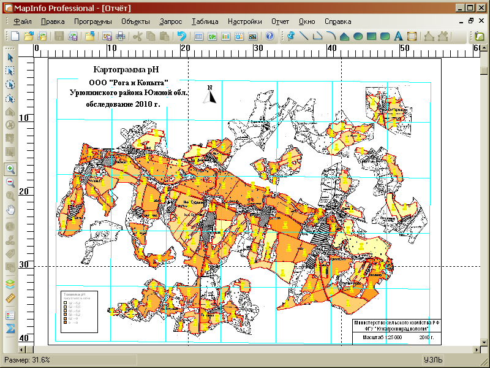Чтобы наша картограмма выглядела аккуратно оформленной, необходимо точно выровнять объекты на ней (титульную надпись, угловой штамп, легенду и пр.) относительно друг друга. Как это сделать – смотрите здесь.
Макет нашей картограммы готов! Осталось меню Файл → Печатать … :-) . Как распечатать макет из MapInfo можно посмотреть на нашем сайте здесь.
С технологической инструкцией по изготовлению картограмм можно ознакомиться на нашем сайте здесь.
Оригинал:
Как создать карту в MapInfo. Пошаговое руководство